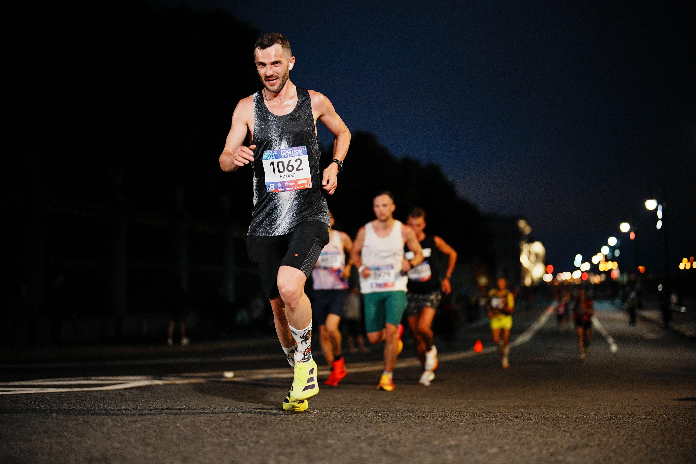
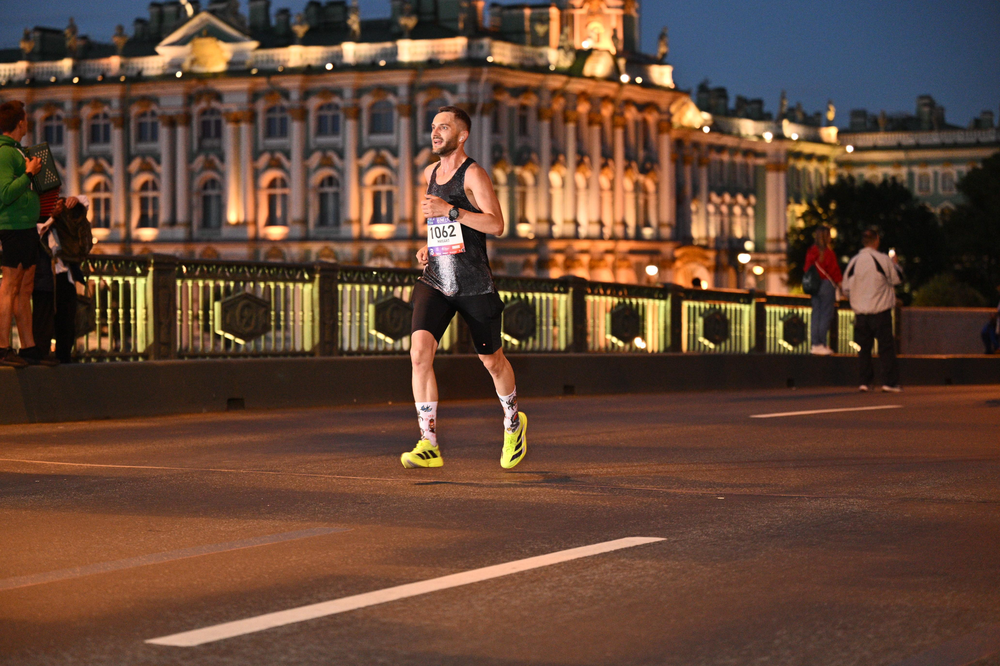
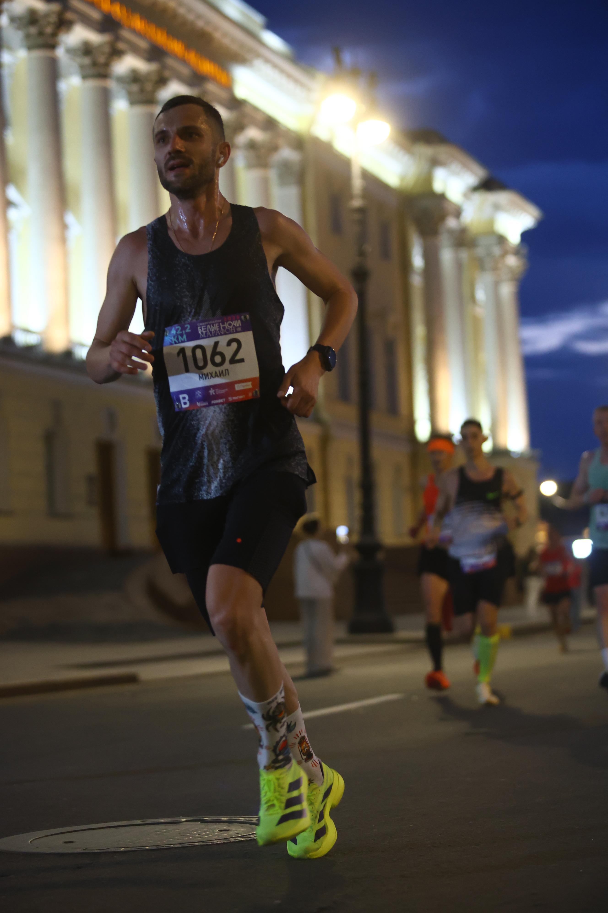
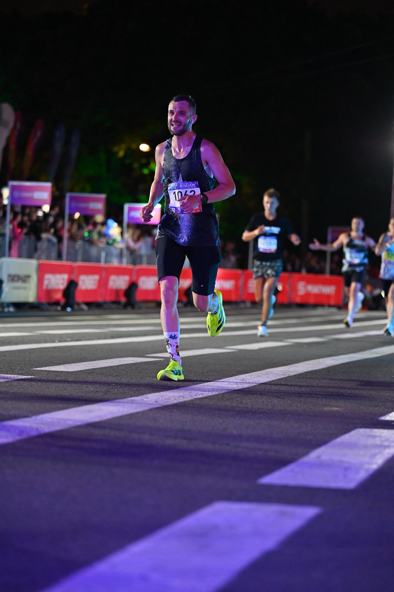

В ночь с субботы на воскресенье по традиции пробежал свой любимый старт - “Белые ночи” в Санкт-Петербурге.
Цель была все та же - выбежать из 3 часов. По ощущениям формы рассчитывал на 2:55–2:58. Морально был готов к худшему сценарию.
День выдался жарким, вечером - классический питерский дождь. Утром стандартный завтрак: овсянка с ягодами и кофе. Забрал стартовый пакет, сразу проверил кластер - после прошлогоднего опыта это обязательный пункт.
Бежал в Adidas Adizero Adios Pro 4 - уже тестировал их на тренировках, но марафон в них был первым.
Днем старался экономить силы: немного прогулялся, поел легкую пищу (овощи на гриле и салат из свежих овощей), потом поехал в отель отдохнуть. Отдохнуть получилось, а вот поспать - нет, никак не смог уснуть.
Старт был в 22:00 на «Газпром Арене», финиш - на Дворцовой площади. Приехал за час, размялся, небольшой дождь быстро закончился. Встал в первый ряд кластера B.
Со старта побежал быстро, так как был в первом ряду и захотелось попасть в кадр. Потом начал выравнивать темп под плановые 4:14, но в итоге решил держать чуть быстрее - около 4:10.
Получились отрезки:
0-5 км - 4:06
5-10 км - 4:11
11-15 км - 4:12
16-20 км - 4:13
21-25 км - 4:10
21-25 км - 4:10

До 25 км бежалось очень легко, даже приходилось себя сдерживать. Пульс 150-160, по питанию всё строго по плану: вода, гели, солевые таблетки. Влажность была высокой - футболка была насквозь мокрая и прилипла к телу.
После 25 км началось самое интересное.
Ноги начали тяжелеть, пульс расти, темп снижался:
25-30 км - 4:18 (вместо плановых 4:10)
Дальше - по наклонной. После 30 км перестали заходить гели, начались спазмы в ногах. Чтобы не словить судороги, выпил магниевый шот (хотя планировал после финиша). Плюс появились проблемы с ЖКТ - вероятно, сыграли свежие овощи перед стартом.
31-35 км - 4:20, уже чисто на характере
35-40 км - 4:32, стало совсем тяжело
На 40-м километре меня догнали пейсмейкеры на 2:59 - это был знак, что пора проснуться. Понял, что сейчас или никогда. Собрался и ускорился до 4:18.
Последний километр дался тяжело - подташнивало, но дотерпел. Сразу после финиша организм сдался - последний гель и кола вышли обратно.
Финиш: 2:59:43 🏅
Выбежал из трех буквально на зубах.
Цель выполнена ☑️

Понимаю, что можно было пробежать спокойнее и быстрее: не начинать так агрессивно и аккуратнее подойти к питанию перед стартом.
Выводы сделал.
А вот над следующей целью еще подумаю 🤔
